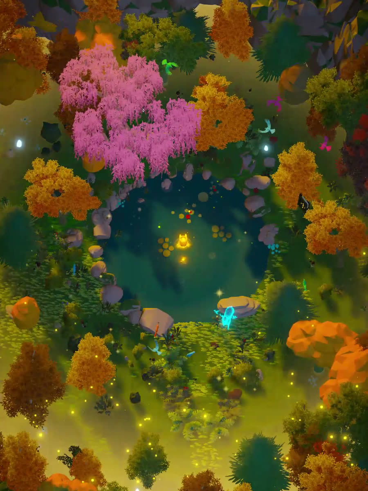
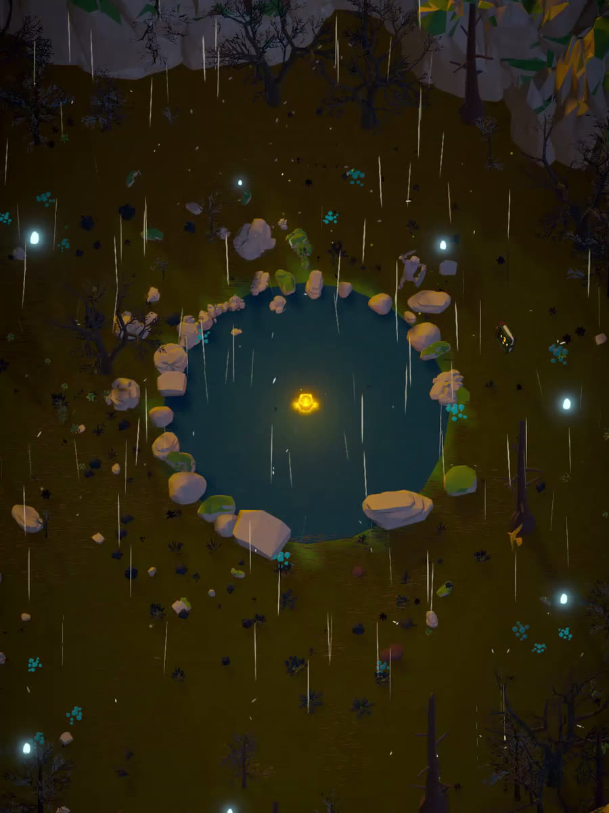
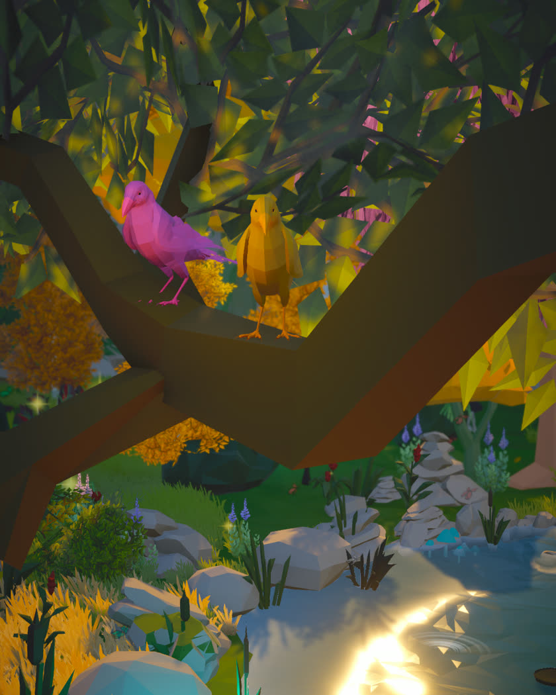
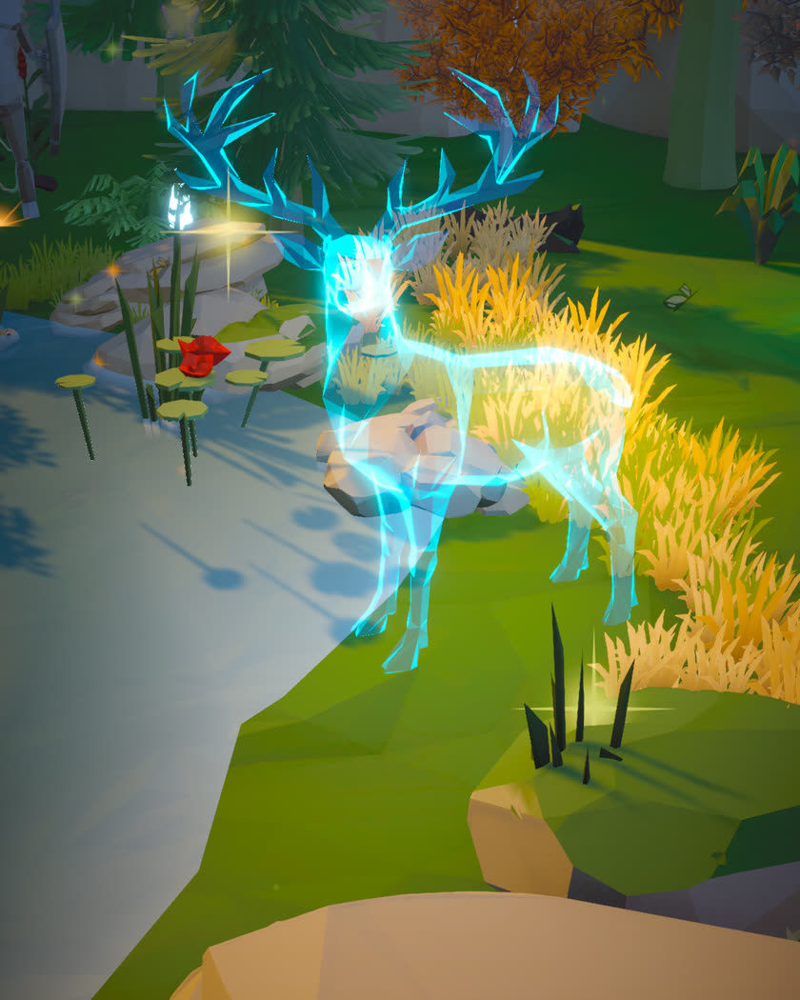

In development · Playable in your browser
Glowing Life
You are not just exploring this world. You are waking it.
A cozy game about a small light being in a world that has gone out. Wherever you go, life comes back: grass turns green, dead trees blossom, fireflies gather and creatures come out to meet you. No timers, no enemies, nothing to fail.
Runs in your browser, no download. Free.


Move your light
How it plays
Hold to move. That is the whole control scheme.
Hold the mouse or your finger and the light being glides after it. WASD works too. There is nothing else to learn and nothing you can get wrong. The world is what responds, not a score.
- Nothing runs out No timer, no energy bar, no fail state. Stand still for a while and the fireflies come to you.
- Short on purpose A few minutes per place. It is made to be picked up in a quiet moment and put down again.
- Every place wants something else Waking a tree, mending a crossing, earning an animal's trust. The mood stays, the task changes.

Five places so far
Somewhere, something is waiting to live again.
Each one asks for a different thing:
- Wake the ancestral treeThe swamp and the first thing that answers you
- Join the broken crossingTwo shores and nothing between them
- Earn a deer's trustIt will not come to you. You have to be worth coming to
- Bring the fox cubs homeThey scattered. The den is still warm
- Wake the waterfallThe loudest thing in the world, gone quiet Not in the demo yet

The grove
You are not picking levels. You are building a home.
The grove starts almost empty. Dark grass, still water, a book and not much else. Then you finish a place and something comes home with you: a tree, a landmark, a creature you woke. Each one brings a piece of its own habitat home with it. The ground changes around it and the grove closes in a little.
You never place any of it yourself. You just keep coming back and every time there is more waiting for you than when you left.
Who makes this
Built by one person, with music by Kæreste.
I build Glowing Life on my own in Unity: the forest, the creatures, the glow, the small light being in the middle of it. I post the steps that finally worked and the ones that broke first.
The music is by Kæreste and it is the part I am least able to be modest about. The grove has its own piece now and it changes what the place feels like far more than anything I added to it.
Four places and the grove are playable today. The plan is around twenty places, then Steam. It will take as long as it takes.
Where to find it
Come along, or just come and play.
The demo lives on itch and runs in your browser. Everything else is where I post the small steps: the things that finally worked and the ones that broke first.
- itch.io Play the demo, free, in your browser
- Instagram Screenshots and the odd small win
- TikTok Single moments, a few seconds each
- YouTube Longer looks at how it is coming together
Also featured on